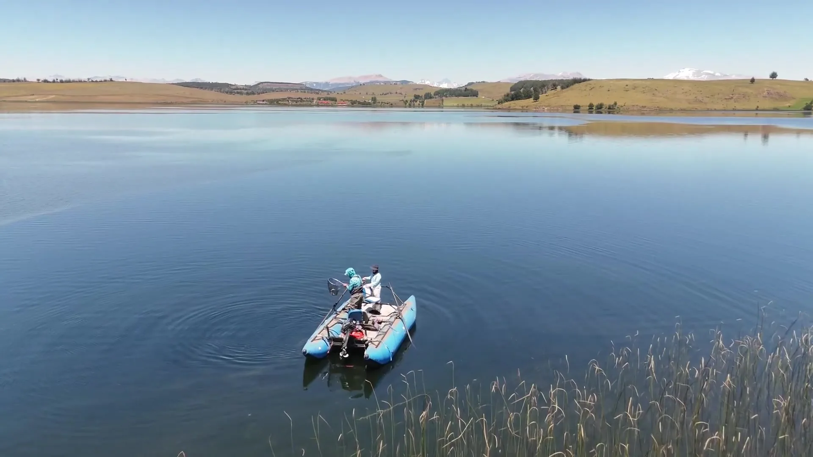
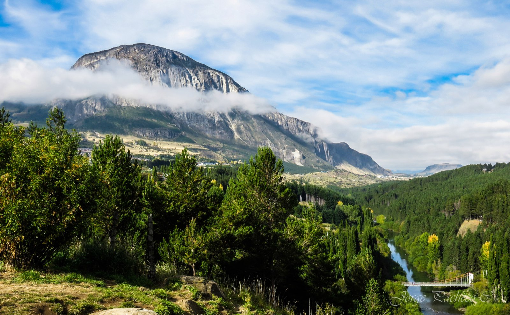
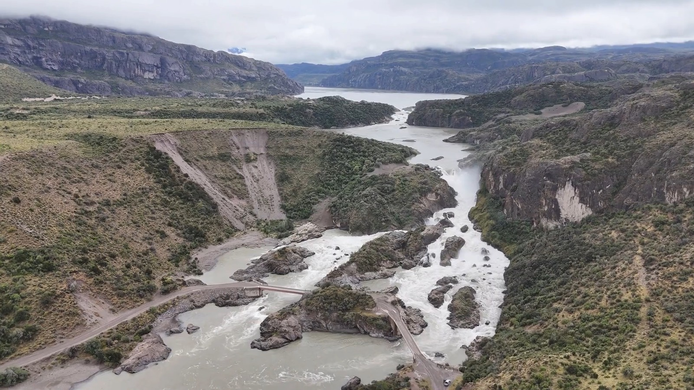
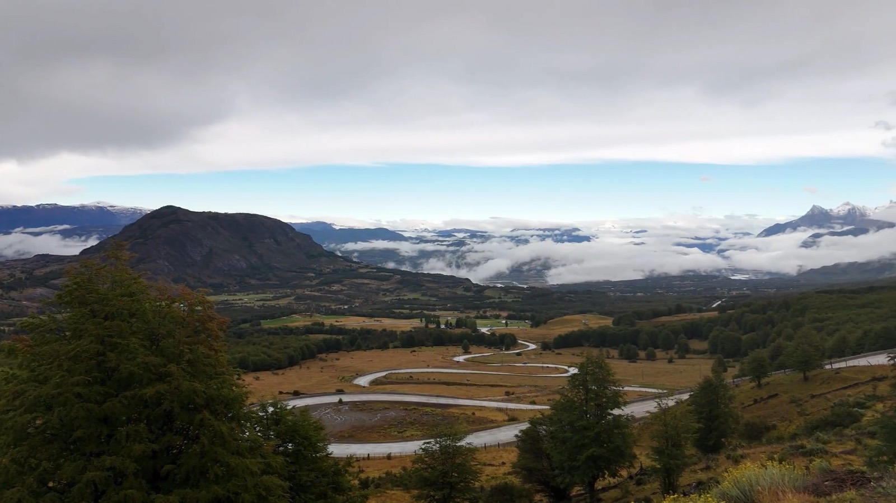

Discover Aysén before you arrive
How to get there, what to see, where to fish, ski or hike, and what to know to own your refuge in Chilean Patagonia.

How to get to Coyhaique: flights, airport and roads
Flights to Balmaceda, the new airport terminal (October 2026), distances and routes to reach the capital of Aysén Patagonia.
Read guide →
Marble Caves of Chile: how to visit them
How to reach the Marble Chapels on Lake General Carrera, boat and kayak tours, best season and tips.
Read guide →
Carretera Austral: Chile's most beautiful road trip
Sections, highlights near Coyhaique, road conditions and tips for driving Route 7.
Read guide →
El Fraile ski area: snow minutes from Coyhaique
Season, runs and how to reach Coyhaique's ski area, surrounded by lenga forest.
Read guide →
Fly fishing in Aysén: rivers, season and licence
The best Aysén rivers for trout, season dates and how to get a fishing licence.
Read guide →
Hiking in Aysén: Cerro Castillo, Queulat and more
Cerro Castillo circuit, Queulat Hanging Glacier and trails near Coyhaique: seasons and bookings.
Read guide →
Living in Coyhaique: quality of life in Patagonia
Seasonal climate, services, connectivity and lifestyle in the capital of Aysén.
Read guide →
How to buy land in Chilean Patagonia
Property titles, rural subdivisions, what to check before buying and whether foreigners can buy land in Chile.
Read guide →
Lake Elizalde: a visitor's guide
How to reach Lake Elizalde from Coyhaique, fishing, boating and things to do at one of the lakes closest to town.
Read guide →
Puerto Ingeniero Ibáñez and the Ibáñez River falls
How to reach Puerto Ingeniero Ibáñez, the Ibáñez River falls, the ferry to Chile Chico and what to see on Lake General Carrera.
Read guide →
Coyhaique to Cerro Castillo: valleys, lookouts and lakes
The Carretera Austral south of Coyhaique: Valle Simpson, lookouts over the Ibáñez valley and lakes along the way.
Read guide →